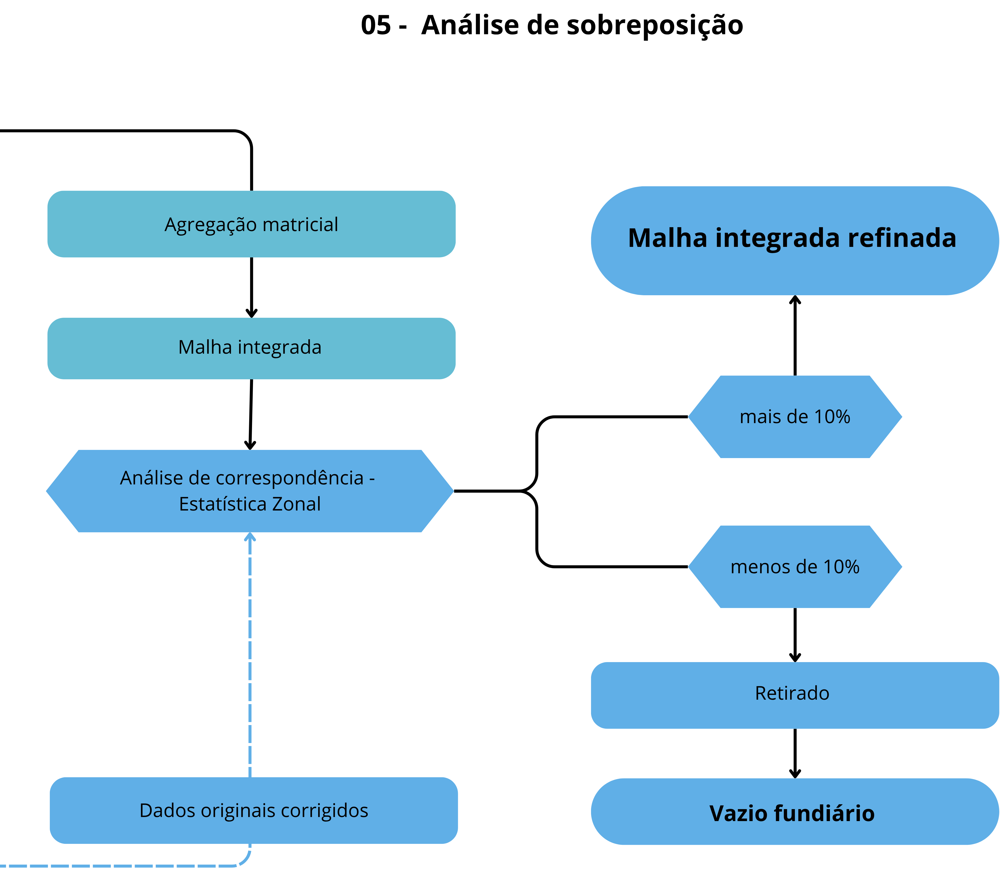

05. Análise de Sobreposição
Esta etapa é responsável por identificar áreas com conflito espacial — onde duas ou mais camadas fundiárias coexistem — e definir, de forma objetiva, qual classe deve prevalecer na malha final.
Como Funciona
- Agregação matricial: A consolidação das camadas é realizada por meio de álgebra de mapas, aplicando-se uma operação de mínimo pixel a pixel entre todas as imagens raster. Como os valores dos pixels representam a hierarquia fundiária, o menor valor corresponde à classe de maior prioridade, sendo selecionado para compor a malha final.
- Geração da malha integrada: O resultado da agregação é um único raster contínuo, no qual cada pixel representa a classe fundiária dominante, sem sobreposições ou lacunas.

Refinamento Vetorial
Após a geração da malha fundiária em formato raster, cada feição vetorial original é comparada com a classe dominante na malha final.
Se mais de 10% da área da feição coincidir com a mesma classe no raster, o vetor é mantido e ajustado, sendo recortado conforme os limites definidos pela malha fundiária ambiental.
Caso contrário, a feição é descartada por não apresentar correspondência suficiente, gerando o vazio fundiário.
Na etapa final, as classes são integradas respeitando a hierarquia fundiária:
- Classes de maior prioridade são mantidas
- Classes de menor prioridade são recortadas em áreas de sobreposição
Resultados do Processo
- Áreas sem sobreposição são incorporadas diretamente.
- Áreas com sobreposição passam pela hierarquização ponderada, gerando uma malha sem vazios ou duplicidades, com decisões rastreáveis.